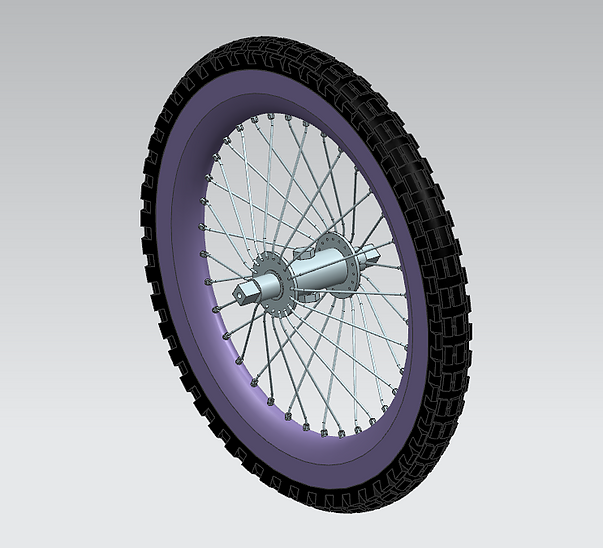
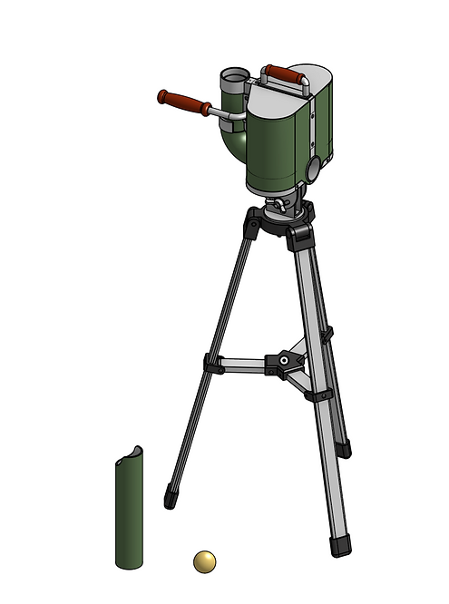
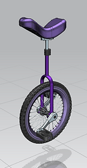
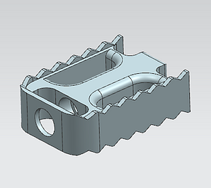
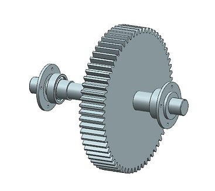
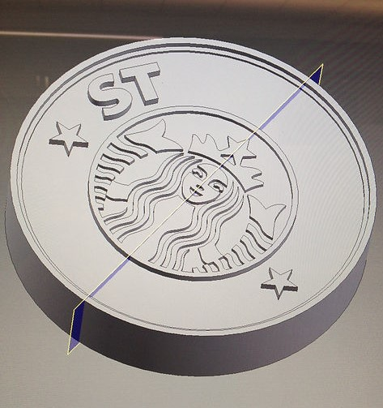

Various CAD projects I've worked on over the years
-
CAD Projects
A unicycle wheel
-
Ball Launcher
(Winter 2021)I created the Ball Launcher as part of a design project for a job application. Features include 2 brushless DC motors, an extendable chute, and detachable tripod. In hindsight, I'm not so confident in that wing nut, but otherwise I think it would make a solid piece of equipment with a fun, retro feel.
See calculations here!The launcher
-
CAD Unicycle
(Spring 2018)I modeled the CAD Unicycle for a class in NX. The purpose was to practice using features of the software taught in class, including extrusions, datum planes, rotationally symmetric features, and booleans.
I researched current manufacturing processes used to fabricate bicycles and unicycles in order to design a realistic and appealing CAD model.
- 
- 
The unicylce (Left), pedal (TR), and wheel (BR)
-
Gear Reduction System
(Spring 2019)I worked on the Gear Reduction System in a team for a Mechanical Elements class. The goal was to create a 3-axle system which would convert a given speed/torque to an output speed/torque. We performed calculations for axles, gears, and bearings to ensure that all would perform a duty cycle beyond a set amount of time without being unnecessarily over-designed.
We used a mix of hand calculations and MATLAB code I wrote to determine the necessary specifications.
See engineering drawings... See MATLAB code...The gearshaft assembly
-
Starbucks Emblem
(Winter 2015)I made this emblem in High School for a class assignment. It's near and dear to me because it's one of the very first things I ever made in CAD!
At the end of the assignment, the teacher printed our designs in color on a powder bed 3D printer and we got to bring them home.
- 
The CAD model in progress (Left) and the completed 3D print (Right)